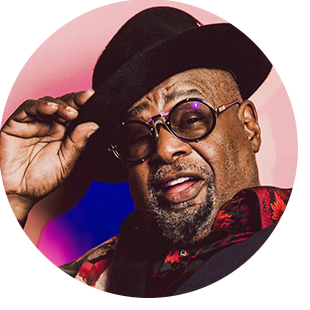

Funk
Acredite ou não, o funk não surgiu no Brasil. Mesmo que o funk carioca seja o mais comentado e escutado nas ruas brasileiras, o gênero surgiu tradicionalmente em comunidades afro-americanas na década de 1960, através da mistura de soul, jazz e rhythm and blues, e é bem diferente do “funk” que estamos habituados a escutar.
O gênero funk procura criar músicas com um ritmo mais suave, lento, solto e sexy, usando repetição de frases, batidas repetitivas, forte e rítmica sucessão de metais, percussão marcante e ritmo dançante. Para isso, traz o foco da música para o groove rítmico forte de baixo elétrico e bateria no fundo, tirando a ênfase da melodia e da harmonia.
Seus cantores mais conhecidos são James Brown, Michael Jackson, George Clinton, Prince, Lyn Collins, John Ben Jor, Diana Ross e muito mais.
Artistas importantes para o Funk
George Clinton
Seu coletivo Parliament-Funkadelic desenvolveu uma forma influente e eclética do funk durante a década de 1970, que se baseou em ficção científica, moda extravagante, cultura psicodélica e humor surreal.
Lyn Collins
Lyn Collins foi uma cantora americana considerada uma das divas do soul e funk. Dois de seus grandes sucessos são “Rock Me Again And Again" e "Think (About It)"
Prince
Prince é considerado um gênio da música. Foi o primeiro artista a lançar um álbum online. Chegou a montar um precursor dos serviços de streaming em 2001, o NPG Music Club.
Jorge Ben Jor
Jorge Ben Jor é um violonista, pandeirista, guitarrista, percussionista, cantor e compositor brasileiro. Considerado o 5º maior artista da história da música brasileira.